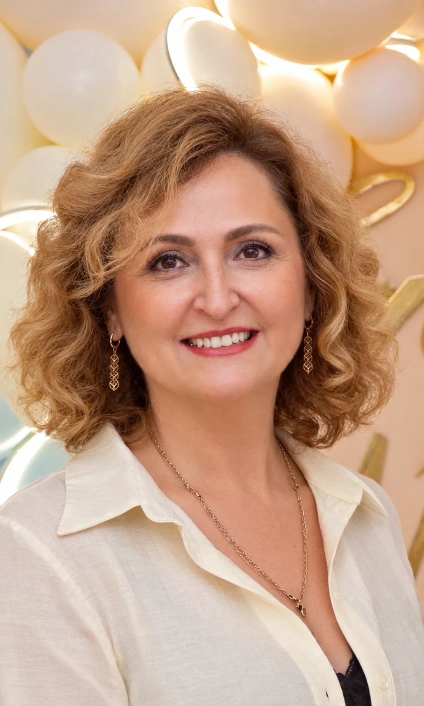
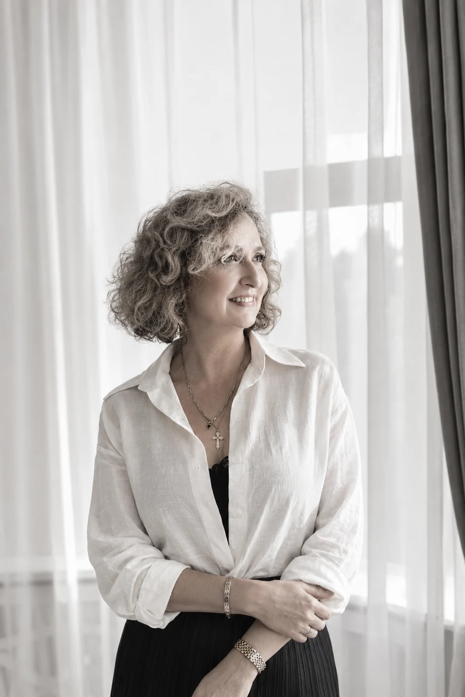

ПСИХОЛОГ · ОНЛАЙН ТА КИЇВ
Не пливи по течії, а будь капітаном свого життя
Я Валентина Рокун, психолог з більш ніж 20 роками практики. Починаючи з 2016 року, після свого захисту працюю з дорослими та підлітками, а також з сім’ями в напрямку Позитивна психотерапія. Позитивна психотерапія відрізняється від інших методів тим, на що саме спрямована увага терапевта: не лише на симптоми й проблеми, а й на ресурси людини, її здібності та цінності. Цей метод відрізняється від інших методів чіткістю, зрозумілістю, структурованістю і дає швидкі результати в житті людини.
Якщо у вас якісь труднощі, особисті проблеми, проблеми з вашим здоров’ям, проблеми в сім’ї, труднощі у вихованні дітей та різні ситуації, які хотілося б змінити — все це можна вирішити, якщо звернутися до професійного психолога, психотерапевта.
Або наберіть +380 97 450 44 33 · Переглянути послуги й ціни

НАПРЯМКИ І ТЕМИ
З чим можу допомогти?

ПРО МЕНЕ
Простір для чесної розмови про себе
Маю освіту практичного психолога та викладача психології. У 2016 році захистилась у напрямку позитивної психотерапії й відтоді працюю в цьому методі з дорослими, підлітками та сім’ями.
Заміжня, маю трьох дорослих дітей. Психологія для мене — робота, хобі, місія та справа життя.
Про мій підхід
Позитивна психотерапія спрямовує увагу не лише на симптоми й проблеми, а й на ресурси людини, її здібності та цінності. Це чіткий, зрозумілий і структурований метод, який допомагає знаходити опору та поступово втілювати зміни у житті. Темп і результати роботи залежать від вашого запиту та обставин.
Особисті труднощі, переживання щодо здоров’я, проблеми в сім’ї чи у вихованні дітей можна обговорити з психологом. Разом ми шукатимемо способи впоратися з ними.
ПЕРШИЙ КРОК
Почнімо з розмови.
Якщо важко сформулювати запит, зателефонуйте або напишіть у месенджер і коротко опишіть проблему. Зустріч можлива онлайн або очно в Києві.